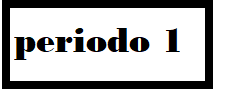

Hola este es el periodo 1
Centro educativo neosistemas
Sebastian Zapata Gómez
8°
2021

actividad 1
las 2 clases de tecnologia
Como nos dice el profe los computadores hablan en lenguaje binario (101001) y por obvias razones diferente al lenguaje humano en este caso se necesita algo que ayude a traducir el lenguaje binario al del ser humano osea que el ser humano pueda darle ordenes al computador y que las entienda y que le permita al computador comunicarse con el usuario y asi los dos entiendan esta ayuda es mas conocida como un INTERMEDIARIO
dev c++
Es un programa que te permite usar un lenguaje de programacion especializado en la comunicacion al computador por medio de SINTAXIS mas conocido como la manera de dar ordenes directas si tienes un error en alguna sintaxis todo te sale mal
estructura de c++
librerias
Es un grupo de instrucciones que son las que te ayudan a programar
funciones y constantes
Es un espacio de cosas que usted necesita y nunca van a cambiar ni con el paso del tiempo y las constantes son numeros si te equivocas en algo todo te sale mal
main o principal
Aqui comienzan las ordenes para que el computador siga tus instrucciones
variables
Esto es mas conocido como las funciones que hay que tener claro para poder programar
actividades faltantes
la importancia de la responsabilidad y puntualidad en la sociedad
responsabilidad social
es contribuir al desarrollo sostenible. Integración, implementación y promoción de un comportamiento socialmente responsable en toda la organización y, a través de sus políticas y prácticas, dentro de su esfera de influencia
puntualidad social
es necesaria para dotar a nuestra personalidad de carácter, orden y eficacia, pues al vivir este valor en plenitud estamos en condiciones de realizar más actividades, desempeñar mejor nuestro trabajo, ser merecedores de confianza.